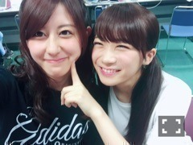
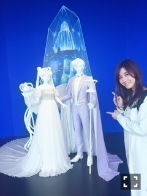
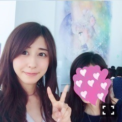

| 2016/06 24 Fri | 斎藤ちはる 変わらずに好きなもの。セーラームーン展へ。(´>∀<｀)ゝ |
ちはるーむへようこそ(｡･o･｡)ﾉ

真夏！
満面の笑みでほっぺをぷにってしてきたから
ちょっと嫌な顔してみた。( ◦˙ ˙◦ )
ちょっと笑顔だけど。( ◦˙ ˙◦ )
真夏が
「ちーちゃんのブログ楽しくて毎回読んじゃう！！」
って言ってくれていて、素直に嬉しい。。
そう言ってくれる人が1人でもいると
頑張ろうって思えるよね！
たとえ周りが敵しかいなくても。
1人でもいてくれたら。
-------------------------♡
今日は、先日まで開催されていた
セーラームーン展の写真を
ばばば〜と載せちゃいます！
この絵が大好き！
グッズのこのファイルも買ったよ〜♡
月に座って思いにふける表情と雰囲気。
セーラームーンの可愛さが凝縮されている！

私、何かを見せたいときに
どうしてもこのポーズになってしまうみたい。
とてつもなく素敵だった！綺麗だった！
セーラームーンは永遠の憧れ。
背が高いからセーラージュピターに
愛着と親近感が湧く。
男勝りなのに、実は女子力が高いところも魅力的。可愛い。
あとはセーラーヴィーナスも大好き！
セーラームーン展に行くと
昔これ持ってた！ってなることが多くて、
でも全部従姉妹にあげちゃったから
勿体無かったね〜って母と話してました(> <)
キューティームーンロッドや
ムーンスティック、
コズミックハートコンパクトなど
小さい頃に持ってたおもちゃばかり(> <)
今でも欲しい(> <)
私はセーラームーン全盛期の時は
まだ子供だったので漫画は読んでいないんです。
だから大人(?)になった今、
漫画をじっくり読んでみたい！
とも思っています〜
できればアニメも観直したい〜
グッズも集めたい〜
昔好きだったものって、
大人になってもずっと好きだったりしますよね。
皆さんも変わらず好きなものってありますか？？

セーラームーン展ついて来てくれたお母さんと♪
お友達が行けなくなっちゃったから
急遽行こうってなったんだけど
快くついて来てくれたよ〜〜
お母さんは、お母さんというより
お友達というかお姉さんというか
不思議な関係です。
何でも話せるし相談できる！
とにかく仲がいいんです(｡･o･｡)ﾉ
斎藤家は(妹が父に反抗してること以外は)
基本的に仲良しだからね〜！！ふふ
-------------------------♡
3:30起きだったお仕事っていうのは、
15thアンダー曲のMV撮影でした\( ˆoˆ )/
夜遅くまでだったから
昨日は更新できなくてごめんね(> <)
今回の曲、私は凄く好き♡
歌詞がとっても可愛い。
皆さん、仕上がり楽しみにしていてください！！
私も楽しみ！！
雨が降るか降らないか。
傘を持っていくか持っていかないか。
毎朝雨という名の自然現象と戦っております。
梅雨よ〜〜〜去れ〜〜〜〜
梅雨が〜〜去れば〜〜暑いけど〜〜
雨〜よりは〜〜〜〜マ〜シ〜さ〜〜〜〜
(宝塚風に歌いながら読んでね♡)
斎藤ちはる